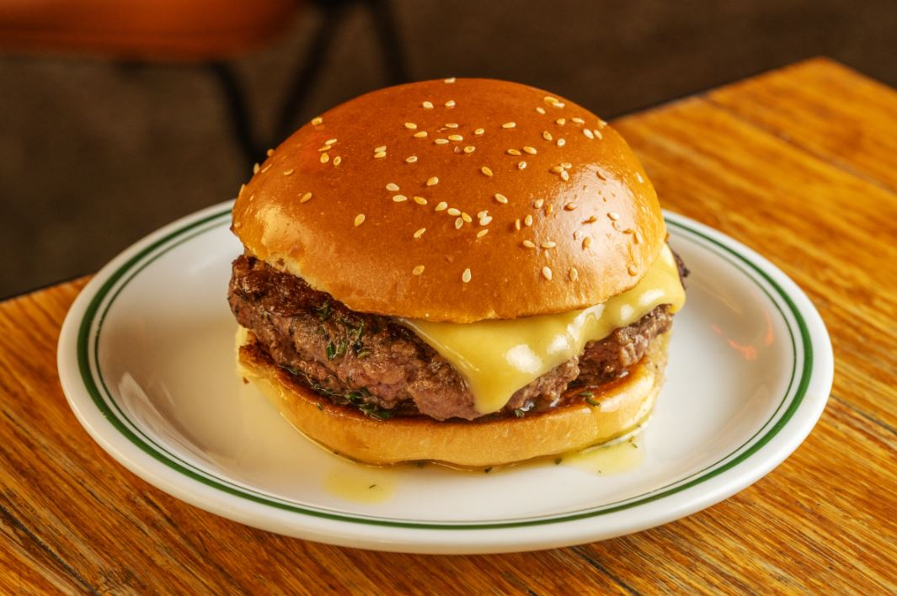

HAMBURGUER ARTESANAL
| Dificuldade | Porções | tempo de preparo |
|---|---|---|
| Fácil | 7 unidades | 30 minutos |

Ingredientes
- 1 kg de peito de boi moído
- 1 colher de chá de sal (ou a gosto)
- 1 colher de café de pimenta-do-reino (ou a gosto)
- 1 colher de sopa de azeite
- 7 pães brioche
- 14 fatias de queijo cheddar (210 gramas)
- 300 gramas de alface
- 2 tomates médios
- 1 cebola roxa pequena
- 7 colheres de sopa de Ketchup (ou a gosto)
Modo de Preparo
- Utilizamos peito de boi, entretanto também é possível fazer o hambúrguer artesanal com coxão mole moído. Caso queira, na hora de montar o lanche, você pode substituir os ingredientes de acordo com a sua preferência;
- Em um recipiente grande, coloque a carne moída. Tempere com sal e pimenta-do-reino. Use as mãos para garantir que os temperos vão se espalhar bem;
- Pegue uma porção de carne moída e faça uma bola, jogando-a de uma mão para a outra - isso ajuda a tirar o excesso de ar. Evite fazer hambúrgueres muito grandes para ficarem proporcionais ao tamanho do pão brioche;
- Em uma superfície limpa (bancada, mesa ou tábua de carne), coloque a bola de carne e, com a palma da mão, dê uma leve esmagada para achatar o formato, deixando-o arredondado;
- Utilize os dedos para apertar o meio do hambúrguer e modelar o formato. Não deixe o hambúrguer muito fino, pois ele pode ficar seco depois de frito. Deixe-o com cerca de 1 cm de espessura;
- Leve uma frigideira de ferro ao fogo alto para esquentar (se não tiver, use uma frigideira grossa). Despeje o azeite e coloque o hambúrguer. Doure o lado de baixo por 2 minutos;
- Com o auxílio de uma espátula, vire o hambúrguer. Despeje 1 fio de azeite na frigideira. Coloque 2 fatias de queijo cheddar por cima do hambúrguer;
- Reduza o fogo, despeje um pouquinho de água na frigideira e tampe. Espere cerca de 30 segundos a 1 minuto para o queijo derreter. Desligue o fogo;
- Para montar o lanche: corte o pão brioche ao meio. Passe ketchup na superfície do pão, coloque 2 folhas de alface, o hambúrguer com o queijo derretido, 3 rodelas de cebola e 2 fatias de tomate. Tampe com a outra base do pão;
- O lanche ficou muito gostoso, com o hambúrguer artesanal douradinho por fora e suculento por dentro.